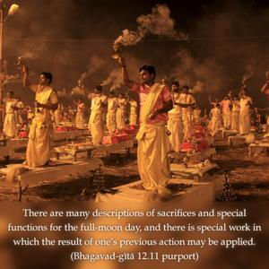

If, however, you are unable to work in this consciousness of Me, then try to act giving up all results of your work and try to be self-situated.

It may be that one is unable even to sympathize with the activities of Kṛṣṇa consciousness because of social, familial or religious considerations or because of some other impediments. If one attaches himself directly to the activities of Kṛṣṇa consciousness, there may be objections from family members, or so many other difficulties. For one who has such a problem, it is advised that he sacrifice the accumulated result of his activities to some good cause. Such procedures are described in the Vedic rules. There are many descriptions of sacrifices and special functions for the full-moon day, and there is special work in which the result of one’s previous action may be applied. Thus one may gradually become elevated to the state of knowledge. It is also found that when one who is not even interested in the activities of Kṛṣṇa consciousness gives charity to some hospital or some other social institution, he gives up the hard-earned results of his activities. That is also recommended here because by the practice of giving up the fruits of one’s activities one is sure to purify his mind gradually, and in that purified stage of mind one becomes able to understand Kṛṣṇa consciousness. Of course, Kṛṣṇa consciousness is not dependent on any other experience, because Kṛṣṇa consciousness itself can purify one’s mind, but if there are impediments to accepting Kṛṣṇa consciousness, one may try to give up the results of his actions. In that respect, social service, community service, national service, sacrifice for one’s country, etc., may be accepted so that some day one may come to the stage of pure devotional service to the Supreme Lord. In Bhagavad-gītā (18.46) we find it is stated, yataḥ pravṛttir bhūtānām: if one decides to sacrifice for the supreme cause, even if he does not know that the supreme cause is Kṛṣṇa, he will come gradually to understand that Kṛṣṇa is the supreme cause by the sacrificial method.